Data Visualization
We provide plot recipes for Plots.jl, Makie.jl, and wrappers for PyPlot.jl.
The recipes for Plots.jl and Makie.jl will work on all kinds of plots given the correct dimensions, e.g.
using Plots
plot(bd, "p")
contourf(bd, "Mx", xlabel="x")See the official documentation for Plots.jl for more information.
For Makie.jl, see the Makie section below.
On the other hand, most common 1D and 2D plotting functions are wrapped over their Matplotlib equivalences through PyPlot.jl. To trigger the wrapper, using PyPlot. Check out the documentation for more details.
Quick exploration of data
Using the same plotting functions as in Matplotlib is allowed, and actually recommended. This takes advantage of multiple dispatch mechanism in Julia. Some plotting functions can be directly called as shown below, which allows for more control from the user. using PyPlot to import the full capability of the package, etc. adding colorbar, changing line colors, setting colorbar range with clim.
For 1D outputs, we can use plot or scatter.
- line plot
plot(bd, "p", linewidth=2, color="tab:red", linestyle="--", linewidth=2)- scatter plot
scatter(bd, "p")For 2D outputs, we can select the following functions:
contourcontourfimshowpcolormeshplot_surfacetricontourtricontourfplot_trisurftripcolor
with either quiver or streamplot. By default the linear colorscale is applied. If you want to switch to logarithmic, set argument colorscale=:log.
- contour
contour(bd, "p")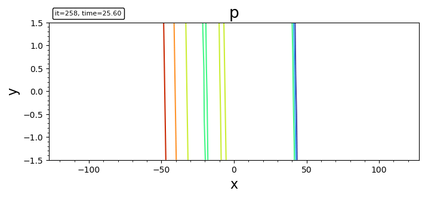
- filled contour
contourf(bd, "p")
contourf(bd, "p"; levels, plotrange=[-10,10,-Inf,Inf], plotinterval=0.1)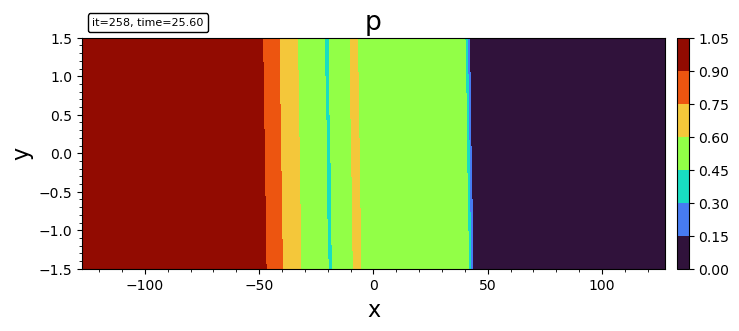
- imshow
imshow(bd, "p")- pcolormesh
pcolormesh(bd, "p")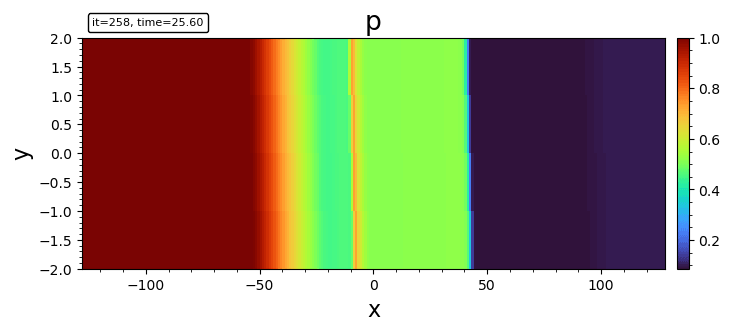
- surface plot
plot_surface(bd, "p")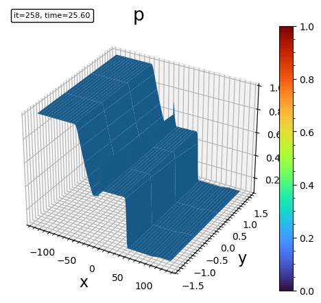
- triangle surface plot
plot_trisurf(bd, "p")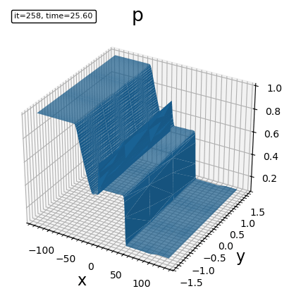
- tricontour
tricontour(bd, "p")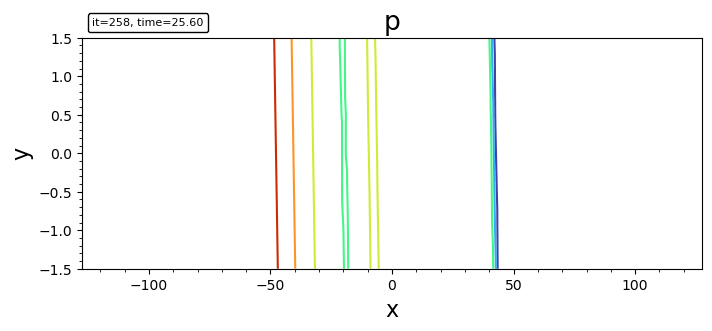
- triangle filled contour plot
tricontourf(bd, "p")- tripcolor
tripcolor(bd, "p")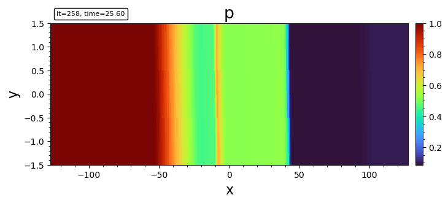
- streamline
streamplot(bd, "bx;bz")
streamplot(bd, "bx;bz"; density=2.0, color="k", plotinterval=1.0, plotrange=[-10,10,-Inf,Inf], broken_streamlines=false)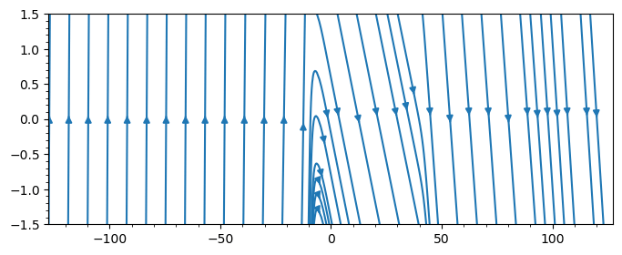
By default Matplotlib may break streamlines at boundaries or where data is sparse. To ensure continuous lines, set broken_streamlines=false.
- quiver (currently only for Cartesian grid)
quiver(bd, "ux;uy"; stride=50)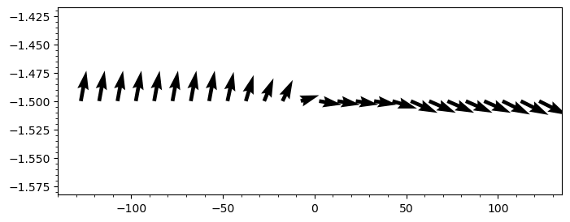
- streamline + contourf
file = "y.out"
bd = load(file)
DN = matplotlib.colors.DivergingNorm
cmap = matplotlib.cm.RdBu_r
contourf(bd, "uxS0", 50; plotrange=[-3,3,-3,3], plotinterval=0.05, norm=DN(0), cmap)
colorbar()
streamplot(bd, "uxS0;uzS0"; density=2.0, color="g", plotrange=[-3,3,-3,3])
xlabel("x"); ylabel("y"); title("Ux [km/s]")
contourf(bd, "uxS0", 50; plotinterval=0.05, norm=DN(0), cmap)
colorbar()
axis("scaled")
xlabel("x"); ylabel("y"); title("uxS0")Makie
Makie.jl is a high-performance interactive plotting library for Julia. Batsrus.jl provides extensive support for Makie through its internal use of DimensionalData.
There are two primary ways to plot data with Makie:
- Plotting the data container directly: You can pass the
BatsrusIDLobject and the variable name as a string. This is convenient and handles automatic interpolation for unstructured data.using GLMakie heatmap(bd, "p")
- Plotting variables as
DimArrays: Since variables are stored asDimArrays, you can extract them and plot them directly. This leverages Makie's native support forDimensionalDataand automatically provides axis labels.heatmap(bd["p"])
The first method is recommended when you need automatic resampling or are working with unstructured/generalized coordinate data. The second method is useful when you want to leverage the full power of DimensionalData selectors and metadata.
Mesh Plotting
For visualizing the grid structure, we provide plotgrid.
For structured or curvilinear 2D data (BatsrusIDL{2, TV}), it shows the individual cell boundaries.
plotgrid(bd)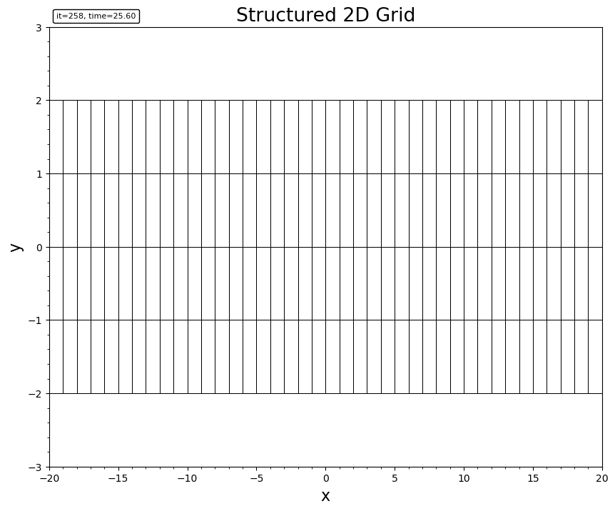
For block-adaptive tree (AMR) data (Batl), it visualizes the leaf block boundaries. It supports both 2D and 3D.
# 2D AMR mesh
plotgrid(batl)
# 3D AMR mesh
plotgrid(batl)
# 2D slices of 3D AMR mesh
fig, axes = plt.subplots(1, 3)
plotgrid(batl, axes[1], dir="x", at=0.0)
plotgrid(batl, axes[2], dir="y", at=0.0)
plotgrid(batl, axes[3], dir="z", at=0.0)

For unstructured Tecplot data, it renders the cell connectivity.
plotgrid(head, data, connectivity)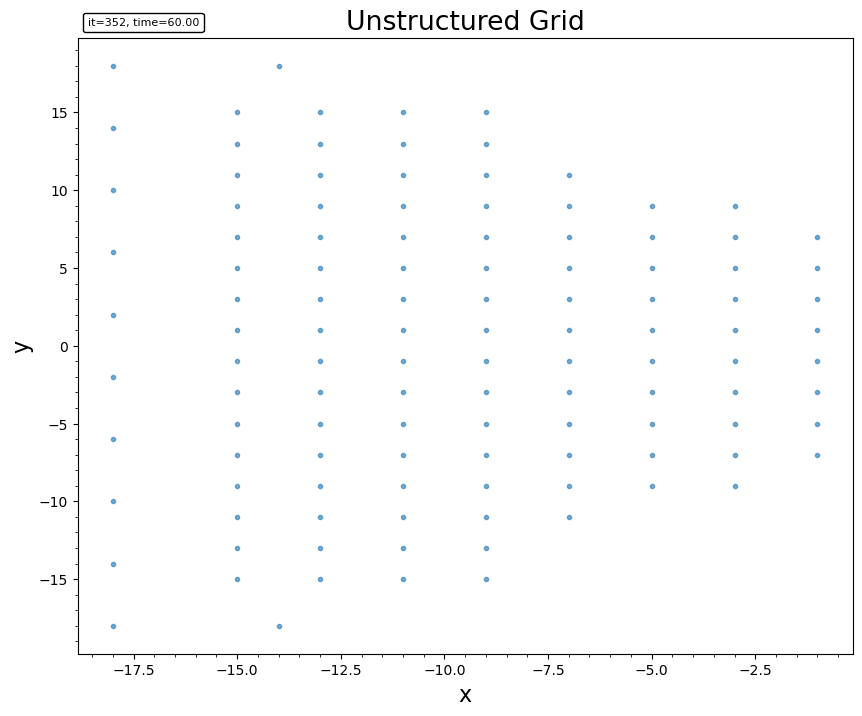
For 3D outputs, we may use cutplot for visualizing on a sliced plane, or streamslice to plot streamlines on a given slice.
Tracing
The built-in streamplot function in Matplotlib is not satisfactory for accurately tracing. Instead we recommend FieldTracer.jl for tracing fieldlines and streamlines.
An example of tracing in a 2D cut and plot the field lines over contour:
file = "test/y=0_var_1_t00000000_n00000000.out"
bd = load(file)
bx = bd.w[:,:,5]
bz = bd.w[:,:,7]
x = bd.x[:,1,1]
z = bd.x[1,:,2]
seeds = select_seeds(x, z; nSeed=100) # randomly select the seeding points
for i in 1:size(seeds)[2]
xs = seeds[1,i]
zs = seeds[2,i]
# Tracing in both direction. Check the document for more options.
x1, z1 = trace2d_eul(bx, bz, xs, zs, x, z, ds=0.1, maxstep=1000, gridType="ndgrid")
plot(x1, z1, "--")
end
axis("equal")Currently the select_seeds function uses pseudo random number generator that produces the same seeds every time.